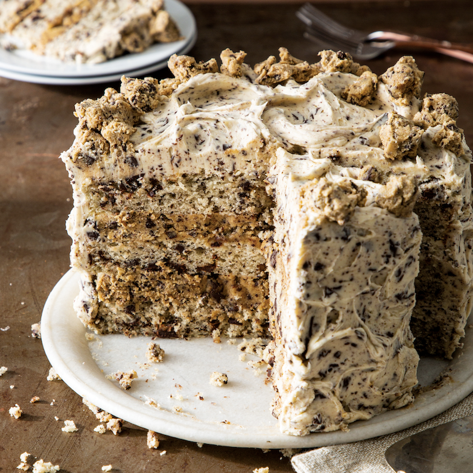

Toafs Cake

Description
Toaf make this delicious chocolate chip cookie layer cake for me this year. It was 10/10 & I highly recommend it.
Lets make it together with the recipe below!
Ingredients
- ½ cup (113 grams) unsalted butter, softened
- 1½ cups (300 grams) granulated sugar
- ¼ cup (56 grams) neutral oil
- 5 large egg whites (150 grams), room temperature
- ¾ teaspoon (4.5 grams) vanilla bean paste
- 2½ cups (313 grams) unbleached cake flour
- 2 teaspoons (10 grams) baking powder
- ½ teaspoon (1.5 grams) kosher salt
- ⅛ teaspoon baking soda
- ¾ cup (180 grams) sour cream room temperature
- ¾ cup (180 grams) whole milk, room temperature
- 8 ounces (226 grams) 60% cacao bittersweet chocolate, finely chopped
- Chocolate Chip Buttercream (recipe follows)
- Edible Cookie Dough (recipe follows)
Instructions
- Preheat oven to 350°F (180°C). Spray 3 (8-inch) round cake pans with baking spray with flour. Line bottom of pans with parchment paper.
- In the bowl of a stand mixer fitted with the paddle attachment, beat butter, sugar, and oil at medium speed until fluffy, 3 to 4 minutes, stopping to scrape sides of bowl. Add egg whites and vanilla bean paste, and beat until well combined, about 2 minutes.
- In a medium bowl, whisk together flour, baking powder, salt, and baking soda. In a small bowl, whisk together sour cream and milk. With mixer on low speed, gradually add flour mixture to butter mixture alternately with sour cream mixture, beginning and ending with flour mixture, beating just until combined after each addition. Fold in chocolate. Divide batter among prepared pans (about 2⅓ cups or 521 grams each). Run a knife or wooden pick through batter to release any large air bubbles. Tap pans on a kitchen towel-lined. counter a few times.
- Bake until a wooden pick inserted in center comes out clean, 20 to 25 minutes. Let cool in pans for 10 minutes. Remove from pans, and let cool completely on wire racks.
- Place 1 cooled cake layer on a cake stand. Place 1 cup (260 grams) Chocolate Chip Buttercream in a small pastry bag; cut a ½-inch opening in tip. Pipe a border around edge of cake layer. Spread 1 cup (265 grams) Edible Cookie Dough onto cake layer until even and reaches piped border. Top with second cake layer, and repeat procedure with piped buttercream and 1 cup (265 grams) Edible Cookie Dough. (Refrigerate remaining Edible Cookie Dough until ready to use.) Top with remaining cake layer. Spread remaining Chocolate Chip Buttercream on top and sides of cake. Refrigerate for 30 minutes. Just before serving, decorate with remaining Edible Cookie Dough.